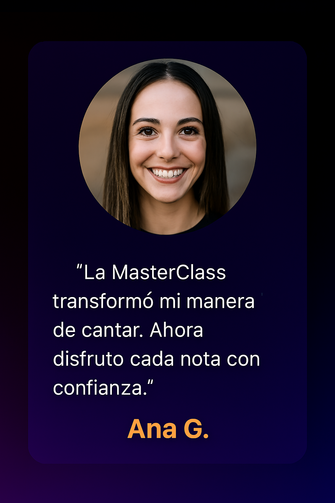
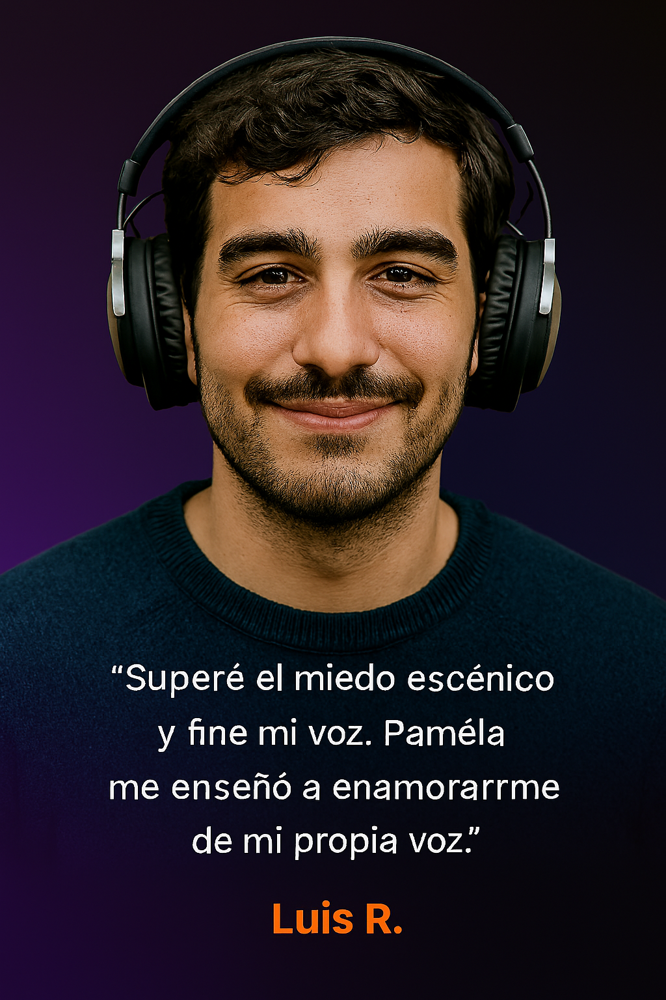

¿Te gustaría que tu voz emocionara como la de tus artistas favoritos?
Domina tu técnica vocal y conecta con tu audiencia como los intérpretes más grandes.
¡Quiero aprender con Pamela!Muchos cantantes creen que cantar bien depende de tener un “don especial” o de forzar la voz. Aquí aprenderás a desmentir esos mitos y a confiar en técnicas reales que cuidan tu voz y potencian tu talento.
Romper mitos vocales es el paso final que te permitirá disfrutar del canto con libertad, sabiendo que tu voz puede crecer y brillar sin límites.
La fusión vocal es la capacidad de unir tu voz de pecho y tu voz de cabeza en un solo flujo sonoro...
Al dominar la fusión vocal, tu canto se vuelve más profesional y expresivo.
La fusión vocal es la capacidad de unir tu voz de pecho y tu voz de cabeza en un solo flujo sonoro...
Al dominar la fusión vocal, tu canto se vuelve más profesional y expresivo.
Cantar no es solo emitir notas, es transmitir sentimientos. La interpretación emocional conecta tu voz con el corazón del público y convierte cada canción en una experiencia única.
Descubrirás cómo usar matices vocales, gestos y energía para que cada canción sea inolvidable. La emoción es lo que transforma una buena técnica en un arte capaz de conmover.
La confianza escénica es la capacidad de transmitir seguridad y autenticidad frente al público. No se trata solo de cantar bien, sino de conectar emocionalmente y vencer el miedo escénico.
Al dominar la confianza escénica, tu voz y tu cuerpo se convierten en un canal de emociones genuinas. El escenario deja de ser un reto y se transforma en tu espacio de expresión.
Las técnicas avanzadas como el Belting y el Twang son recursos vocales que te permiten cantar con potencia, claridad y estilo profesional. Aprenderás a aplicarlas de forma segura, evitando tensiones y cuidando tus cuerdas vocales.
Dominar estas técnicas te dará un control vocal avanzado, permitiéndote destacar en escenarios y grabaciones con una voz poderosa y expresiva.
Los matices vocales son los detalles que hacen que tu voz sea única y expresiva. Aprenderás a controlar el tono, el volumen y la intensidad para transmitir emociones auténticas en cada interpretación.
Dominar los matices vocales te permitirá transformar una interpretación correcta en una experiencia artística memorable, logrando que tu voz sea reconocida por su personalidad y sensibilidad.
La afinación es la capacidad de cantar las notas con precisión y estabilidad. Aprenderás a reconocer los tonos, corregir desviaciones y mantener tu voz en perfecta sintonía con la música.
Dominar la afinación te permitirá cantar con seguridad en cualquier estilo musical, transmitiendo profesionalismo y emoción en cada interpretación.
El registro vocal es el rango de notas que puedes cantar, desde los graves más profundos hasta los agudos más brillantes. Aprenderás a ampliar tu registro de manera segura, sin tensiones y con control absoluto.
Extender tu registro te permitirá interpretar canciones con libertad, sorprender a tu audiencia y sentir que tu voz tiene un poder ilimitado. Es el paso que transforma tu canto en una experiencia completa.
Inscríbete ahora y aprovecha esta promoción única.
¡Quiero aprovechar la promoción!
“La MasterClass transformó mi manera de cantar. Ahora disfruto cada nota con confianza.”

“Superé el miedo escénico y afiné mi voz. Pamela me enseñó a enamorarme de mi propia voz.”
“Nunca pensé que podría cantar bien. Esta clase me demostró que todos tenemos una voz única.”
Inscríbete ahora y aprovecha esta promoción única.
¡Quiero aprovechar la promoción!Acceso completo a todos los contenidos
o 12x $157.46 MXN con tarjeta de crédito
Inscribirme ahora →
Para ver el precio en tu moneda local, sólo da clic al link de abajo
👇👇👇
VER EL PRECIO EN MI MONEDA LOCAL!
No. Está diseñada para que cualquier persona pueda mejorar su técnica vocal desde cero.
Acceso ilimitado. Puedes ver las clases cuando quieras, a tu ritmo y desde cualquier dispositivo.
Tienes garantía de satisfacción. Si no conectas con el contenido, puedes solicitar reembolso.
Sí. Puedes pagar en 12 cuotas de $157.46 MXN con tarjeta de crédito.